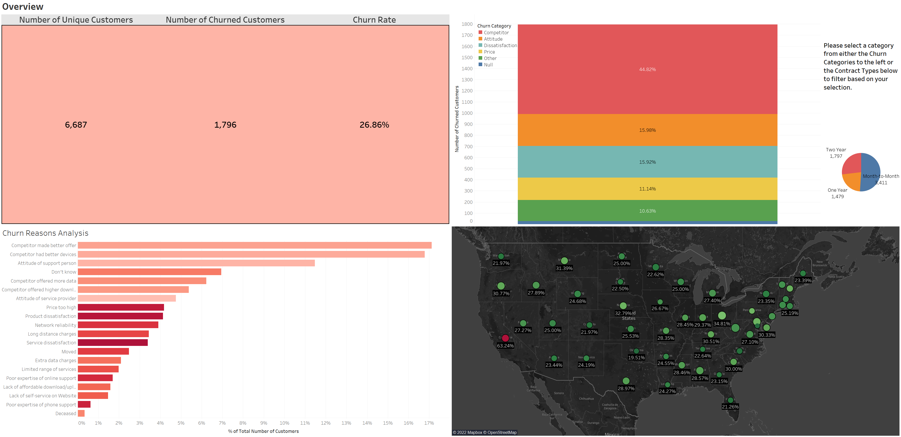

Tableau Visualizations
Databel Churn Analysis
When learning Tableau, I had a unique opportunity to make a full blown visualization.
This is the result of that - a fully explorable Tableau visualization into a fictional company's churn analysis!

Classic Tetris Analysis
I discovered competitive Classic Tetris in late 2021 and immediately got hooked.
I’ve wondered who the most consistent players are overall, and the results surprised me a bit.